i only work on this mostly on my free time. being a priori conlang, mostly words are added just when something suddenly pops in my head. i am so excited for this to be fully functional, but i don't want to rush the process, i should make sure i don't go too slow either.
making this website will help motivate me to work on it more often coz mostly i get lazy or i just don't simply know where to continue. i had a conworkshop page here but i dont understand the grammar forms, (such a noob) and the words in my conlang can be ambiguous, have different meanings and word classes. this way, i can work with some of my interests: conlanging, and web design & development :) noob at both btw :)
i started working on this website in September 2020. i stopped for a while because of school (and games).. now, in december 2020, we're having our christmas break. i dont have anything to do so i remember to continue this.
the website will be a bit more informal (i make them lowercase) especially here in the introduction, but it will get more formal as things go more technical and more confusing for a no0b like me. i will be putting "does this make sense?" tags in parts where im not sure if it makes sense or im just playing around without thinking. ye me no0b please correct me if i do something wrong in these parts, or in other parts, assuming someone actually reads this :) haha loner
you found this either in reddit, discord, or both. i shared this to you even tho its trash because this will be like a collection of my questions with context. i'll be babbling about my conlang and i'll ask u if its fine or maybe im just randomly doing nonsense. you can feedback anywhere from the two (reddit and/or discord), i'd be more than happy to read it especially that i have just learned some web dev and im still not as good with linguistic things as well :)
Mir-an is a language spoken in the old times by The People of Mir. They call themselves Miro.
They live in.. yes, you guessed it right, Mir, a continent divided into eight regions, one being the capital of course, Zanmir. The name just literally says "middle land" because.. yes, you guessed it right again, it's the middle region.
Here is a map of Mir. Solid white lines represent the land border and rivers (the main ones, at least). Dashed white lines represent mountains and mountain ranges. The mountain range is on the eastern side, the others are smaller neighbouring mountains that follow a path. The cactus represents a desert. This is the leeward side of the mountain range. fuk is it the other side?? Red lines represent the region boundaries. Most of them coincide with the mountains and rivers. The dashed red line, however, represents a disputed area. I think you see why. very noob at worldbuilding, does this all make sense?
Mir-an literally means "language of Mir", that simple. As said earlier, Mir-an was spoken in the old times. I'm not yet sure if it will be used as frequently in the modern times. It's because the language is supposed to be simple, though not as simple as Toki Pona, but pretty sure it will be a bit hard to express modern concepts. I'm still working on very basic concepts and making sure words are short as possible to make room for more complex ones. This, I think, is the reason of my slow progress, when I make a word, I want it to be one-syllable only so I don't end up having long words when I start smashing them. is this a real thing? longwordophobia?
But anyways, despite the probable death of the language, Mir-an will surely make it into the surface of modern times. Mir-an should show up in artifacts, telling the story of how people used to live. The people might even revive it if it actually dies like Latin or Hebrew.. or maybe it just evolves and transforms into a language that is actually useful in these times. Pretty sure there is at least one Miro who speaks it here in Oar (Earth) ;) well i just go to Mir when everybody hates me here :) ps: im fine :)
Mircho, the writing system, is the reason why I started all of this. Transliterating English to it looks terrible so I decided to make a conlang for it. This is also why Mir-an is set in the old times. I'll discuss about it in the orthography section.
guy gets bored, made a conlang then codes a website for it after two years, stuck at home (as if i go out before the pandemic), even tho he's noob at both conlanging and coding. he asks you pls check if these make sense.